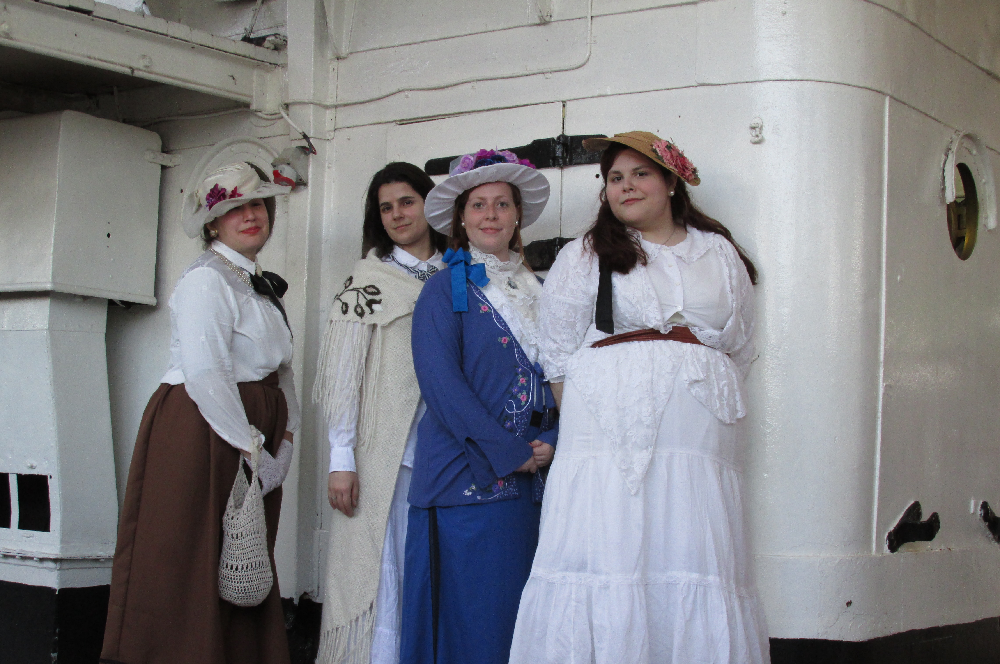

 ¡Todos a bordo! Pensemos en aquellos lujosos barcos que transportaban pasajeros en largos trayectos, por puesto no siempre eran lujosos pero en esta ocasión hablaremos de un paseo en el Museo Fragata Sarmiento